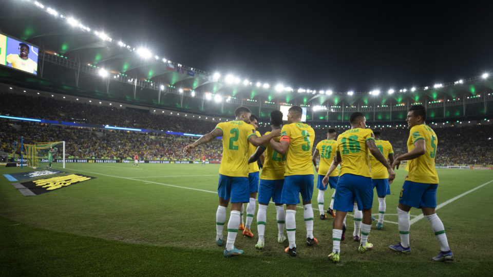

Seja bem vindo(a)
A copa do mundo está chegando, e o Catar é logo ali! Faltando menos de 100 dias para o início do
Mundial, nós iremos recordar os grandes
artilheiros da história das Copas.

Confira a lista dos maiores artilheiros
#
Nome
País
Gols
Jogos
Anos
1.
Miroslav Klose
Alemanha
16
28
2002, 2006, 2010 e 2014
2.
Ronaldo Fenônemo
Brasil
15
19
1994, 1998, 2002 e 2006
3.
Gerd Müller
Alemanha
14
13
1970 e 1974
4.
Just Fontaine
França
13
6
1958
5.
Pelé
Brasil
12
14
1958, 1962, 1966 e 1970
6.
Sándor Kocsis
Hungria
11
5
1954
7.
Jürgen Klinsmann
Alemanha
11
17
1990, 1994 e 1998
8.
Helmut Rahn
Alemanha Ocidental
10
12
1986 e 1990
9.
Gary Lineker
Inglaterra
10
12
1986 e 1990
10.
Gabriel Batistuta
Argentina
10
12
1994, 1998 e 2002
11.
Teófilo Cubillas
Peru
10
13
1970, 1978 e 1982
12.
Thomas Müller
Alemanha
10
12
2010, 2014 e 2018
13.
Grzegorz Lato
Polônia
10
20
1974, 1978 e 1982
Confira os grupos da Copa do Mundo do Catar 2022!
Grupo A
Grupo B
Grupo C
Grupo D
Grupo E
Grupo F
Grupo G
Grupo H
Catar
Inglaterra
Argentina
França
Espanha
Bélgica
Brasil
Portugal
Equador
Irã
Arábia Saudita
Autralia
Costa Rica
Canadá
Sérvia
Gana
Senegal
USA
México
Dinamarca
Alemanha
Marrocos
Suíça
Uruguai
Holanda
País de Gales
Polônia
Tunísia
Japão
Croácia
Camarões
Coreia do Sul